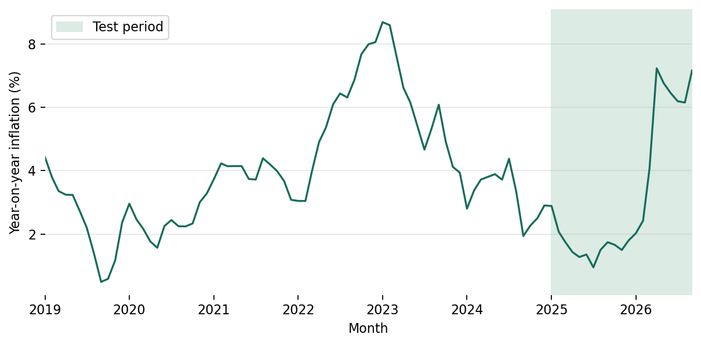
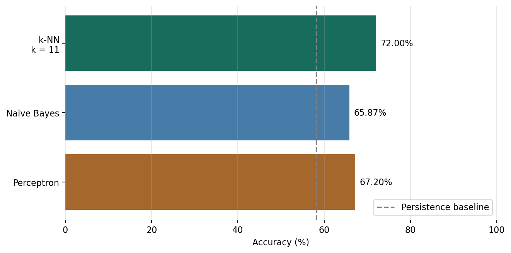
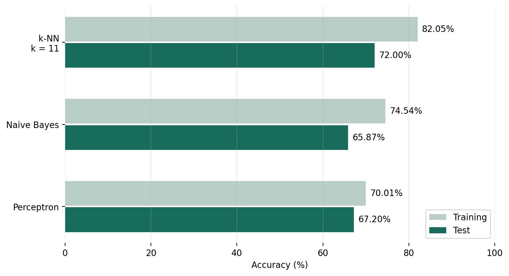

Joshua Otero · Anthony Rojo Aaron Michael Ariedo · Alan Nikkos
Madid
National inflation
2019–2026

National CPI-derived observations provide context for the regional
prediction task. Shading marks January 2025–September 2026, the
held-out test period.
18Regions
9Features per sample
1,237Training samples
375Held-out test samples
Three methods. One test.
We compare k-NN (k = 11), Gaussian Naive Bayes, and perceptron.
Every method predicts the same 375 test samples; a rise in inflation
is the positive class.
Results interpretation
[interpretation]
Test accuracy

Accuracy is the share of all predictions that are correct. The
dashed line marks the persistence baseline.
Test performance · increase is the positive class
Configuration
Accuracy
Precision
Recall
k-NN · k = 11
72.00%
75.92%
71.08%
Naive Bayes
65.87%
64.84%
81.37%
Perceptron
67.20%
65.88%
82.35%
Persistence baseline
58.13%
61.93%
59.80%
The settings were chosen after comparing these test results. Treat the
comparison as exploratory.
Learning versus generalizing
Each pair uses one fitted configuration: first evaluated on its
training samples, then on the later test period.
Training and test accuracy

Accuracy on 1,237 training samples and 375 test samples. The k-NN
training score includes each sample as its own neighbor.
Training and test interpretation
[interpretation]
Training minus test · percentage points
Configuration
Training
Test
Gap
k-NN · k = 11
82.05%
72.00%
+10.05 pp
Naive Bayes
74.54%
65.87%
+8.67 pp
Perceptron
70.01%
67.20%
+2.81 pp
From prices to a prediction task
PSA All Items Consumer Price Index data, base year 2018 = 100. We
model direction, rather than the size of the next inflation change.
The target
Calculate year-on-year inflation for each region and month. Label
the sample “increase” if that rate exceeds the previous month’s
rate, or “decrease” if it is lower.
Inflation(t) = 100 × (CPI(t) / CPI(t − 12) − 1)
Exact ties and rows with missing required observations are
excluded. The national total and “Areas Outside NCR” aggregate are
not regional training examples.
Why this problem?
A change in the inflation rate describes whether price pressure is
accelerating or easing. Comparing learning methods on this task
helps us study what past price movements can, and cannot, tell us
about the next month.
Source: PSA OpenStat table 2M4ACP22, downloaded
November 13, 2026. The source file covers January 2018–October
2026, this experiment stops at September 2026.
A chronological split
Training · 1,237 samplesApril 2019–December 2024600 rises · 637 falls
Test · 375 samplesJanuary 2025–September 2026204 rises · 171 falls
Scaling uses only training means and population standard deviations.
The same values transform the test set. No feature uses observations
from its own target month.
Inspect the nine input features
Information available before the target month
Feature
Definition
rate_t3, rate_t2, rate_t1
Year-on-year inflation three, two, and one month before the
target
trend_1
rate_t1 − rate_t2
trend_2
rate_t2 − rate_t3
base
Month-on-month price change for the target month one year
earlier
recent
Average month-on-month price change over the previous three
months
gap
recent − base
national
National month-on-month price change one month before the
target
The base effect follows a CPI identity: year-on-year inflation rises
when this month’s price growth exceeds growth in the same month a
year earlier. The earlier growth is known; this month’s growth must
be estimated.
Three ways to learn the direction
All three methods share the same nine scaled features and
chronological split. Each method solves the same prediction task.
k-nearest neighbors
Find the closest training examples by Euclidean distance and
predict their majority direction. It can reflect local patterns
without fitting one global boundary.
Estimate a mean and population variance for each feature within
each class. Add the Gaussian log-likelihoods to the class
log-prior and choose the larger score. This assumes conditional
independence between features given the class.
Displayed setting
Empirical priors · class-specific population variances
Predict using a weighted sum of features, updating weights
whenever a training sample is misclassified. A linear decision
boundary separates predicted rises from falls.
The run reaches the pass limit without convergence and uses the
last adjusted weights. It is evaluated using the same settings
for both training and test accuracy.
Discussion
[insert discussion]
Interpretation
[interpretation]
Limitations and improvements
[insert limitations and improvements]
Conclusion
[insert final conclusion]
Code and data
The repository contains the CPI data, preprocessing, model
implementations, and evaluation code.
Run the commands in this order to refresh the figures. The Naive
Bayes runnable creates the combined charts using the saved results
from k-NN and perceptron.